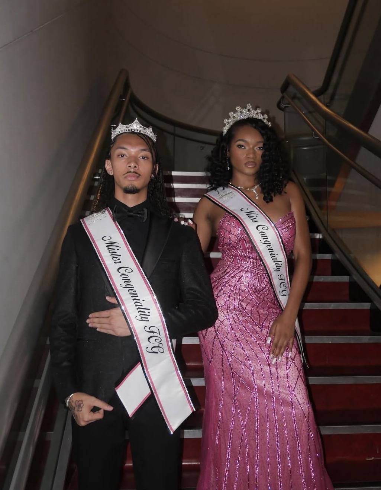
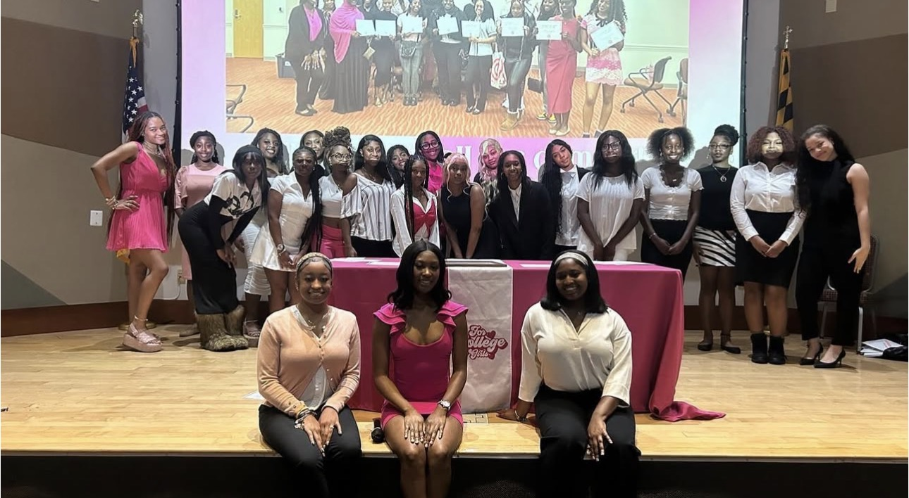
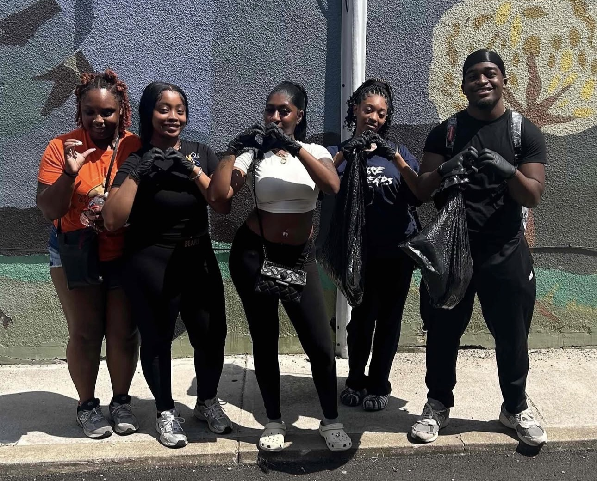

What We Do
For College Girls UM is built to help members grow in the areas college doesn’t always teach directly. We focus on academic confidence, career readiness, community, and personal growth — all inside a supportive sisterhood that makes learning feel less overwhelming and more empowering.
Academic Development
We support members in building strong academic habits and feeling confident in college-level expectations. This includes learning how to advocate for yourself, communicate professionally with professors, and stay organized in a way that supports long-term success.
Examples of what to expect
- Study sessions and accountability meetups
- How to write emails to professors + office hours confidence
- Goal-setting and time-management support
Professional Development
We help members grow into career-ready women by practicing the skills that make professional environments feel less intimidating. Our goal is to make networking, leadership, and professionalism feel learnable — not something you’re expected to already know.
Examples of what to expect
- Resume + LinkedIn support
- Networking practice and interview prep
- Professional etiquette (business dinners, dress, communication)

Community & Mentor–Mentee Program
College can feel confusing and isolating when you’re learning everything for the first time. Our community is designed to feel like a safe place to ask questions, get guidance, and connect with people who genuinely want to see you win. Our “big sister” approach helps members learn without feeling judged.
Examples of what to expect
- Mentor–mentee matching and check-ins
- New member support and community building
- Honest conversations about navigating college life

Personal Development
Personal growth matters just as much as grades and resumes. We encourage members to build confidence, emotional awareness, and healthy routines that support their goals. This includes learning how to set boundaries, protect your peace, and evolve into the woman you want to become.
Examples of what to expect
- Confidence-building workshops and reflection activities
- Self-care, wellness, and mindset discussions
- Life skills support (habits, routines, balance)
Community Involvement
Service is a core part of our identity. We believe leadership includes giving back, showing up for others, and using our time and energy to make the community around us better. We create opportunities for members to serve together and build purpose through action.
Examples of what to expect
- Volunteer days and service projects
- Campus partnerships and community initiatives
- Fundraisers and donation drives
